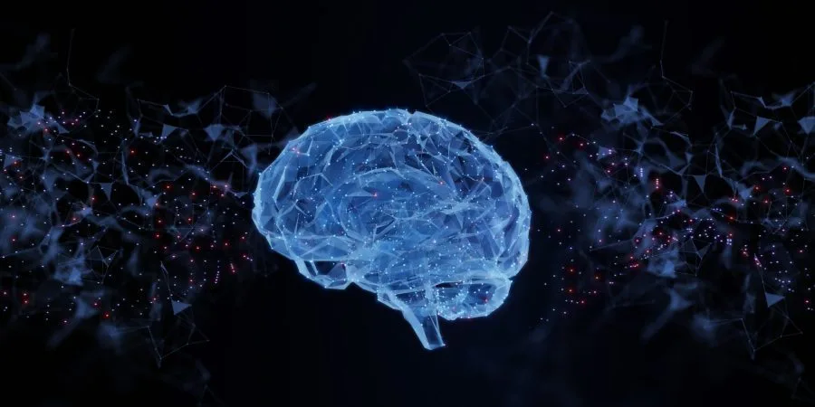

Andrew Huberman教你如何運用神經科學提高學習效果

Andrew Huberman 是斯坦福大學的神經科學教授，專注研究大腦的可塑性、學習和情緒調節。他透過《Huberman Lab Podcast》分享科學知識和生活改善技巧，致力於用神經科學幫助公眾提升健康和學習效果。
在 8 月 26 日的 Podcast 中，Huberman 探討了如何提升學習效果，節目長約一個半小時。我在聽完後整理出重點，並加入了一些基礎知識，幫助那些沒有時間的人快速掌握精華。
1.神經可塑性與學習
神經可塑性參與所有的學習過程，通過加強和弱化神經之間的傳導，來增強學習效果。雖然有很多研究強調新生神經元的重要性，但大多數學習是依賴於強化和弱化現有神經連結，而不是新生神經元。弱化神經傳導並不代表遺忘，很多新學到的技能也需要神經連結的弱化來完成。因此，強化和弱化傳導對學習同等重要。
2. 學習與抵銷遺忘
學習方式可以因人而異，有些人偏好視覺、聽覺、寫字等方式，但學習的重點不在於用什麼方式，而在於如何「抵銷遺忘」（offset forgetting）。在提到抵銷遺忘時，必須先了解遺忘曲線（Forgetting Curve）。遺忘曲線顯示，記憶會隨時間快速減弱，而透過「抵銷遺忘」的策略（如重複學習和複習），可以延緩或減少記憶的流失，從而使記憶更穩固。
傳統上，最有效的抵銷遺忘方式是「複習」。隨著每次複習，我們可以有效地減緩遺忘過程，形成長期記憶。但 Huberman 認為，有一個比複習更有效的方式，那就是「考試」。尤其是在學完新知識後立刻進行測試，效果最佳。很多人對考試不以為然，但這種考試和我們通常認為的測驗不同，它應該被看作是一個幫助學習的「工具」，而非用來評分的「依據」。
Huberman 強調，考試是幫助學習的強大方式，他但願自己能早點知道這一點，最好從幼稚園時就能運用這種策略，這樣在學習過程中可以節省大量時間。研究表明，在學習後立即測試，其效果明顯優於反覆閱讀多次。學完新知識後進行測試的組別，在之後的考試中成績比沒有測試的對照組高 50%。測驗和學習之間的時間間隔也很重要，學完後越早進行測試，記憶效果越佳。
考試不僅是檢驗知識的手段，也是防止「遺忘」的重要工具。根據研究，讓一群孩子讀一次傳記，然後立即進行自我測試，其效果比連續閱讀多次更好。回憶需要花費努力，而這正是記憶得以鞏固的原因。考試後知道錯誤的地方，然後改進，是鞏固記憶的關鍵。測驗次數越多，記憶效果越好。
3. 睡眠對學習的作用
Huberman 也提到，睡眠對學習至關重要，它直接影響到第二天的學習能力。學習後的睡眠同樣關鍵，因為大腦記憶鞏固的過程發生在學習後的深度睡眠階段，包括 NREM 睡眠的第三階段和快速眼動（REM）睡眠。「首夜效應」（First Night Effect）強調了第一晚睡眠對新學習內容鞏固的關鍵作用，這有助於將短期記憶轉移到長期記憶中。
NSDR（Non-Sleep Deep Rest，非睡眠深度休息）也是促進大腦放鬆和恢復的一種方法。它包含冥想、身體掃描、瑜伽式休息（Yoga Nidra）等，目的是在不睡覺的情況下達到深度休息，幫助大腦恢復能量和專注力。這種狀態類似於深度睡眠，有助於提升學習效果、鞏固記憶和減少壓力。每天進行 5 到 10 分鐘的冥想，可以大大提升專注力，即便不小心跳過一天，也無需擔心，隔天繼續即可。
4. 情緒對記憶的影響
情緒對記憶的鞏固也有重要影響。雖然負面情緒強度高時，記憶會更深刻（如 PTSD），但 Huberman 提到其他情緒（如興趣或厭惡）同樣有助於學習，因為這些情緒會刺激神經遞質的釋放，強化神經連結。有老師會在學習後讓學生跳入冰水中，以強烈的情緒來鞏固記憶，雖然這種做法不被鼓勵，但我們可以透過學習後沖冷水來達到類似效果。
Huberman 提出了 2021 年的一項研究，研究了六所學業成績優異的醫學生，並總結了他們的共同習慣。這些學生通常每天定時學習，學習時集中注意力，不被外界干擾，每天學習 3-4 小時，但會分成多個時段。這些學生還經常教導他人所學的內容，這不僅沒有影響自己的成績，反而幫助他們更好地鞏固記憶。
Huberman 也建議建立固定的學習時間，讓生物時鐘適應，從而提高學習效率。學習過程中難免會遇到困難或不感興趣的部分，但這些部分往往是最具挑戰性也最有效果的，努力是學習不可或缺的一部分。適量的咖啡因也有助於提升專注力和腎上腺素水平，進一步促進學習。
Huberman 也建議老師在課堂上應該使用簡短的開放式問答作為測驗，並不要將其用作評分，而是幫助學生回顧和鞏固知識的工具。隨堂測驗的目的是幫助學生記住內容，而不是評分。當學生在隨堂考中犯錯時，應當即時了解正確答案，這樣才能真正提升記憶效果。
在學習中，間隙效應（Gap Effect）也有助於記憶鞏固。在教授新知識或技能後進行短暫的停頓（10-30 秒），有助於大腦重複並整合剛剛學到的內容，這可以顯著提高學習效果。這種方法可以讓學習過程更加高效，特別適用於教學中。
 空腹小雞跟思思醫師一起斷食，順便養一隻小雞來養小雞 →
空腹小雞跟思思醫師一起斷食，順便養一隻小雞來養小雞 →
好朋友週信
每週五一封：《健康駭客週報》這集的研究重點，加上家醫專欄這週的新文章。免費，隨時可以退訂。